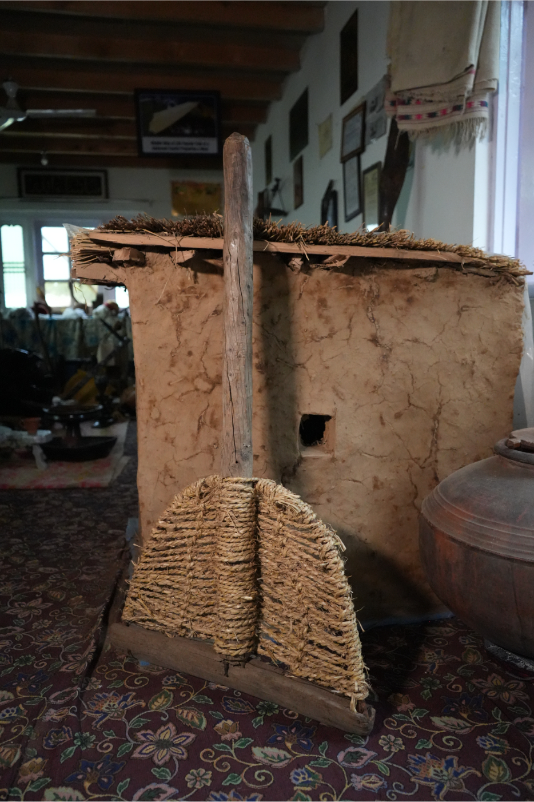
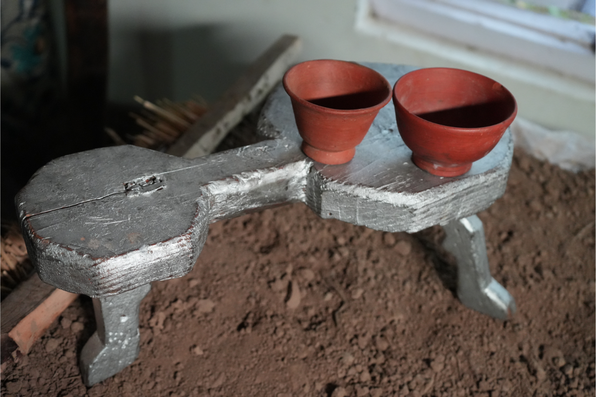
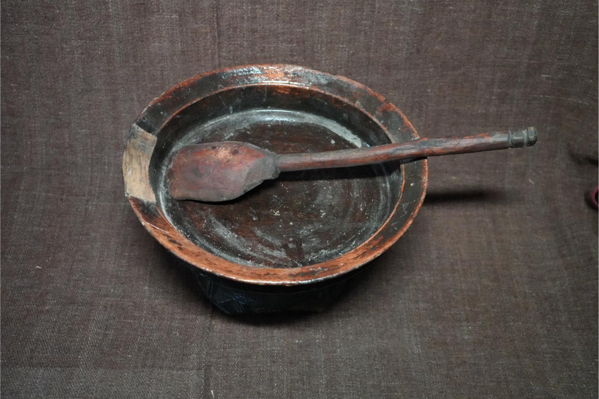
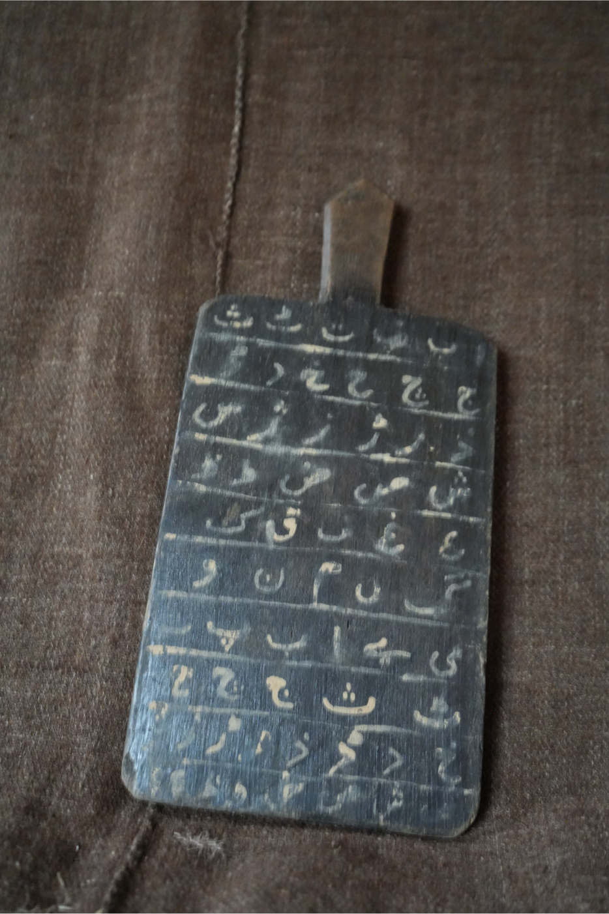
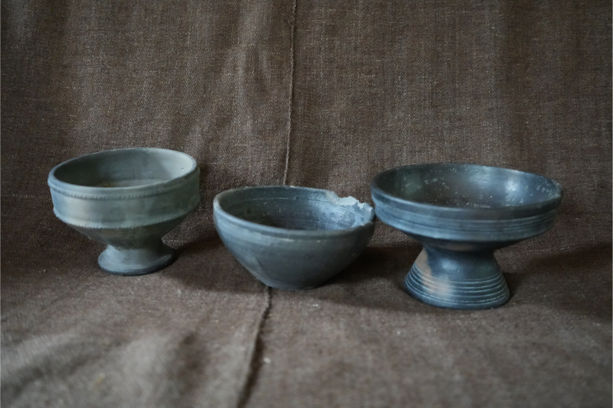
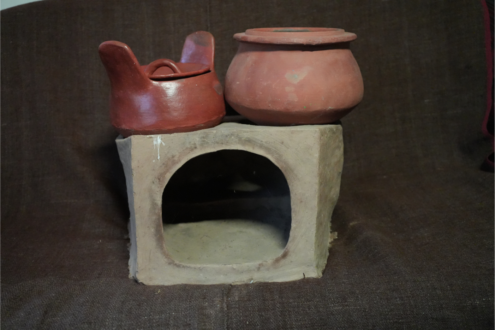
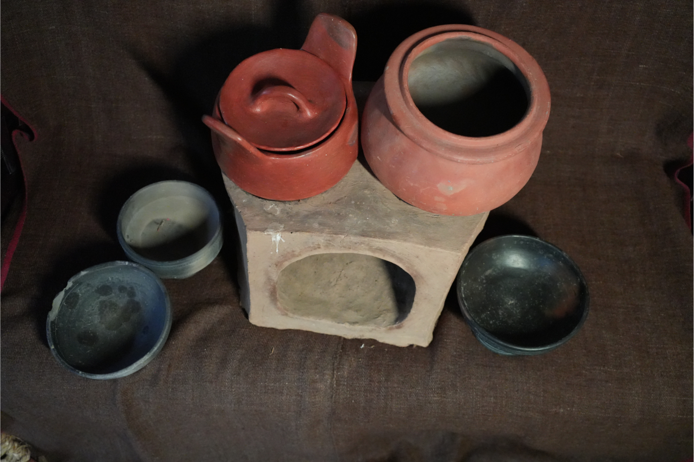
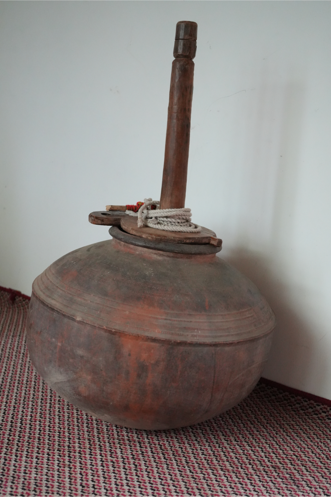

Traditional Footwear

Winter household tool
Climate-responsive shelter

Everyday household furniture

Traditional clay stove

Household utensils

Medicinal knowledge record

Dairy processing vessel

Handcrafted ornaments

Vibrant ornaments
Museum Detail